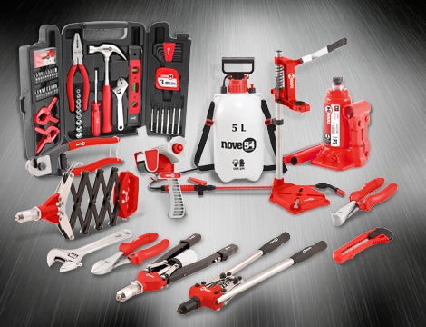

Ferramentas manuais de uso profissional leve e hobby, para reparos e instalações em geral
Em sua linha destacam-se os jogos e carrinhos com ferramentas, que proporcionam praticidade na rotina de consertos ou reformas, reunindo as principais ferramentas utilizadas em instalações ou manutenções, em jogos organizados e muito funcionais.
Produtos
Foco no desenvolvimento de ferramentas manuais, comercializadas em jogos ou peças individuais. São diversos itens, entre chaves combinadas e fixas, chaves de fenda e fenda cruzada/phillips, soquetes, alicates, trenas, aplicador para silicone, serras copo, entre outros.
Os jogos são confeccionados em aço cromo vanádio e em aço carbono, destinados tanto para aplicações profissionais, quanto esporádicas, oferecendo a ferramenta ideal para diferentes perfis de trabalho.
